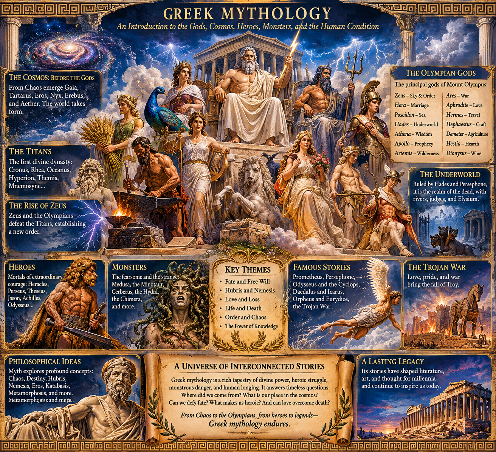

Greek Mythology

GREEK MYTHOLOGY
An Introduction to the Gods, Primordial Cosmos, Titans, Heroes, Monsters, and the Human Condition
I. INTRODUCTION: UNDERSTANDING GREEK MYTHOLOGY
Greek mythology is an extensive collection of traditional narratives concerning the origins of existence, the formation of the cosmos, the genealogy of divine beings, the relationship between gods and humanity, the nature of death, and the struggles of legendary heroes.
It is not simply a collection of fantastical stories. It represents an evolving cultural framework through which ancient Greek civilizations explored natural phenomena, human psychology, political authority, morality, fate, social obligations, and the unknown.
Greek mythology developed over centuries through oral traditions, poetry, religious practices, regional customs, and written literature. Consequently, it does not possess one universally authoritative canon. Different authors and communities preserved different versions of the same events, sometimes presenting contradictory genealogies, motivations, and conclusions.
Some of the most important surviving sources include:
- Hesiod's Theogony: The genealogy and succession of divine beings.
- Homer's Iliad: The Trojan War and the conflict between Achilles and Agamemnon.
- Homer's Odyssey: Odysseus's journey home following the Trojan War.
- Ovid's Metamorphoses: A Roman literary collection preserving and transforming numerous Greek mythological traditions.
- The Homeric Hymns: Religious and poetic compositions devoted to individual gods.
- The surviving Greek tragedies of Aeschylus, Sophocles, and Euripides.
Understanding these sources requires distinguishing mythology, religious practice, literary interpretation, and historical evidence.
II. THE PRIMORDIAL COSMOS: BEFORE THE GODS
One of the oldest surviving Greek accounts of cosmic origins appears in Hesiod's Theogony, composed approximately around the eighth or seventh century BCE.
The narrative begins with Chaos.
Chaos should not automatically be understood as disorder or destruction in the modern sense. The ancient Greek term can refer to a primordial gap, opening, or yawning expanse.
It represents a condition preceding the familiar organization of the cosmos.
From this primordial beginning emerge several fundamental entities.
- Chaos
Chaos represents the primordial opening or void from which the subsequent cosmic order emerges.
It is not necessarily an intelligent creator or a supreme deity. It is the initial condition of existence within Hesiod's genealogy.
- Gaia
Gaia is the personification of Earth.
She represents the material foundation of the world, the generative ground from which numerous divine beings and cosmic structures emerge.
Gaia is one of the most important primordial entities because she becomes the mother of the Titans and numerous other beings.
- Tartarus
Tartarus represents a profound cosmic abyss or subterranean depth.
It eventually becomes associated with the imprisonment of defeated divine enemies and the deepest regions of the Underworld.
It is distinct from Hades, although later traditions sometimes associate their territories closely.
- Eros
Eros represents generative desire, attraction, and the force through which beings come together.
In the earliest cosmological account, Eros is a primordial principle rather than simply the winged romantic figure familiar from later artistic representations.
His presence establishes an important principle: existence requires more than separation; it also requires connection and generation.
- Nyx
Nyx is Night.
She is a powerful primordial goddess whose descendants include numerous personifications of fundamental conditions of existence.
Her children include:
- Hypnos: Sleep.
- Thanatos: Death.
- Moros: Doom.
- Nemesis: Retribution.
- Eris: Strife.
- The Moirai: The Fates, in certain genealogical traditions.
- Erebus
Erebus represents primordial darkness.
He is associated with the shadowy regions of existence and is sometimes distinguished from Nyx, although they are genealogically and cosmologically connected.
- Aether and Hemera
Aether represents the bright upper atmosphere or celestial light.
Hemera represents Day.
In Hesiod's genealogy, Nyx and Erebus produce Aether and Hemera.
The emergence of these entities establishes a symbolic transition between darkness and illumination.
The emergence of the cosmos
Gaia produces Uranus, the Sky, along with other primordial geographical and natural entities.
Gaia and Uranus become partners and produce the Titans.
The cosmos is no longer simply a primordial opening. It becomes an increasingly differentiated structure containing Earth, Sky, darkness, light, and the foundations of divine genealogy.
III. THE TITANS: THE FIRST DIVINE DYNASTY
The Titans represent an earlier generation of divine beings preceding the Olympian gods.
Gaia and Uranus produce twelve principal Titans:
- Oceanus
- Coeus
- Crius
- Hyperion
- Iapetus
- Cronus
- Theia
- Rhea
- Themis
- Mnemosyne
- Phoebe
- Tethys
Their descendants become important figures throughout subsequent mythology.
The principal Titans
Cronus
Cronus becomes the ruler of the Titans after overthrowing Uranus.
He is associated with generational succession, agricultural symbolism, and the passage of cosmic authority.
He is frequently confused with Chronos, the personification of time, although they are distinct figures in Greek tradition.
Rhea
Rhea is the mother of the principal Olympian gods.
She becomes especially important through her efforts to preserve Zeus from Cronus.
Oceanus
Oceanus personifies the great encircling river believed to surround the inhabited world in ancient Greek cosmography.
He is associated with Tethys and numerous river and water divinities.
Hyperion
Hyperion is associated with heavenly light.
His children include Helios, Selene, and Eos in the familiar genealogy.
Themis
Themis represents divine law, established order, custom, and the principles governing proper conduct.
Mnemosyne
Mnemosyne personifies memory.
She becomes the mother of the nine Muses through her union with Zeus.
Her existence is particularly significant because memory and the preservation of knowledge are essential to ancient poetic and cultural traditions.
Iapetus
Iapetus becomes the father of several important mythological figures, including Prometheus, Epimetheus, and Atlas in common genealogies.
The overthrow of Uranus
Uranus fears his offspring and prevents certain children from emerging into the world.
Gaia becomes resentful and conspires with Cronus to overthrow him.
Cronus attacks Uranus with a sickle supplied by Gaia.
This event establishes the first major succession of cosmic authority.
The act also produces further mythological consequences. From the blood of Uranus emerge beings associated with vengeance, warfare, and nature, while Aphrodite is associated in Hesiod's account with the aftermath of Uranus's severed genitals entering the sea.
The cosmos becomes increasingly populated by distinct divine and supernatural forces.
IV. THE RISE OF ZEUS AND THE TITANOMACHY
Cronus becomes ruler after overthrowing Uranus.
However, he receives a prophecy that one of his own children will overthrow him.
Fearing the same fate as his father, Cronus swallows each child born to Rhea.
His children include:
- Hestia
- Demeter
- Hera
- Hades
- Poseidon
- Zeus
Rhea eventually intervenes.
When Zeus is born, she hides him and gives Cronus a stone wrapped in clothing instead.
Cronus swallows the stone, believing that he has eliminated another potential challenger.
Zeus survives and grows into adulthood.
Eventually, Zeus confronts Cronus. Through divine assistance, Cronus is forced to release the children he swallowed.
Zeus and his siblings organize a rebellion against the Titans.
The Titanomachy
The Titanomachy is the great war between the Titans and the emerging Olympian order.
The conflict involves numerous divine beings, including the Hecatoncheires, enormous beings with a hundred hands, and the Cyclopes.
The Cyclopes provide Zeus with his thunderbolt, Poseidon with his trident, and Hades with a helmet of invisibility in familiar accounts.
Zeus ultimately defeats the Titans.
Many are imprisoned in Tartarus.
However, not every Titan is necessarily an enemy of Zeus. Some remain neutral or eventually become associated with the Olympian order.
The victory establishes a new cosmic hierarchy.
Zeus becomes the principal ruler of the gods.
Poseidon receives authority over the sea.
Hades receives authority over the Underworld.
The world is divided among the three brothers, although Zeus retains supreme kingship.
This transition establishes one of Greek mythology's recurring themes: the succession of generations, the instability of authority, and the possibility that established power will eventually be challenged.
V. THE OLYMPIAN GODS
The Olympians are the principal gods associated with Mount Olympus.
The conventional Twelve Olympians are not entirely consistent across every tradition. Hestia and Dionysus, for example, can occupy different positions depending on the account.
Zeus — King of the Gods
Domains:
- Sky
- Thunder
- Lightning
- Kingship
- Divine authority
- Oaths and hospitality
Symbols:
- Lightning bolt
- Eagle
- Oak tree
- Scepter
Zeus is the supreme Olympian authority.
He represents kingship, political legitimacy, and the enforcement of divine order.
He is also a highly complicated character, frequently involved in affairs, conflicts, punishments, and relationships with both mortals and immortals.
His numerous descendants become central to Greek mythology.
Hera — Queen of the Gods
Domains:
- Marriage
- Queenship
- Family legitimacy
- Women and childbirth
Symbols:
- Peacock
- Crown
- Pomegranate
- Scepter
Hera is Zeus's wife and sister.
She is frequently portrayed as protective of marriage and divine authority, but her mythology also contains numerous stories of jealousy, conflict, and vengeance against Zeus's lovers and their children.
Poseidon — God of the Sea
Domains:
- Oceans
- Earthquakes
- Horses
- Storms
Symbols:
- Trident
- Horse
- Dolphin
Poseidon controls the sea and is sometimes called the Earth-Shaker.
He is an important figure in the Odyssey, particularly through his hostility toward Odysseus.
Hades — Lord of the Underworld
Domains:
- The dead
- The Underworld
- Buried wealth
- Subterranean resources
Symbols:
- Cerberus
- Helm of invisibility
- Cypress
- Bident
Hades is not the Greek equivalent of Satan.
He is the ruler of the dead and presides over the realm to which mortal souls travel.
He is generally less involved in Olympian politics than Zeus or Poseidon.
His marriage to Persephone is one of the most important Underworld narratives.
Athena — Goddess of Wisdom
Domains:
- Wisdom
- Strategic warfare
- Crafts
- Civilization
- Practical intelligence
Symbols:
- Owl
- Olive tree
- Helmet
- Shield
Athena is born from Zeus's head in one famous mythological account.
She represents intelligence, planning, strategy, and disciplined action.
Her conflict with Poseidon over the patronage of Athens is particularly important.
She offers the olive tree, while Poseidon offers a source of water or a saltwater spring, depending on the version.
Athena's gift is accepted, and the city becomes associated with her.
Apollo — God of Prophecy, Music, and Healing
Domains:
- Prophecy
- Music
- Poetry
- Healing
- Archery
- Purification
Symbols:
- Lyre
- Laurel
- Bow
- Raven
Apollo is associated with the oracle at Delphi.
He represents harmony, knowledge, artistic excellence, and prophetic insight, although his mythology also contains destructive and punitive aspects.
Apollo should be distinguished from Helios, the older personification of the Sun, although their identities and solar associations increasingly overlap in later traditions.
Artemis — Goddess of the Wilderness
Domains:
- Hunting
- Wilderness
- Animals
- Childbirth
- Protection of young people
Symbols:
- Bow
- Deer
- Moon
Artemis is Apollo's twin sister.
She represents independence, wilderness, and the boundaries between civilization and nature.
Ares — God of War
Domains:
- Warfare
- Violence
- Bloodshed
- Combat
Symbols:
- Spear
- Helmet
- Shield
Ares represents the violent and destructive aspects of warfare.
He is frequently contrasted with Athena, whose association with war emphasizes strategy and disciplined intelligence.
Aphrodite — Goddess of Love and Beauty
Domains:
- Love
- Beauty
- Desire
- Sexual attraction
- Fertility
Symbols:
- Dove
- Shell
- Rose
- Myrtle
Aphrodite's origin differs between traditions.
In Hesiod's account, she emerges from the sea following the overthrow of Uranus.
In Homer's tradition, she is the daughter of Zeus and Dione.
Her mythology explores attraction, desire, jealousy, and the often unpredictable influence of love.
Hermes — Messenger of the Gods
Domains:
- Communication
- Travel
- Commerce
- Trade
- Trickery
- Boundaries
Symbols:
- Winged sandals
- Caduceus
- Winged helmet
Hermes is the messenger of the gods and a guide of souls to the Underworld.
He is associated with travelers, merchants, thieves, and clever negotiation.
Hephaestus — God of Metalworking
Domains:
- Blacksmithing
- Fire
- Craftsmanship
- Technology
- Invention
Symbols:
- Hammer
- Anvil
- Tongs
Hephaestus is the divine craftsman.
He creates extraordinary weapons, armor, and mechanical objects for gods and heroes.
His stories provide an interesting mythological connection between invention, engineering, labor, and divine power.
Demeter — Goddess of Agriculture
Domains:
- Agriculture
- Grain
- Fertility
- Harvest
- Seasonal cycles
Symbols:
- Wheat
- Torch
- Cornucopia
Demeter's relationship with Persephone provides the mythological explanation for seasonal agricultural cycles.
Additional important Olympian and divine figures
Hestia: Goddess of the hearth, domestic stability, and sacred household fire.
Dionysus: God of wine, ecstasy, theater, transformation, and ritual frenzy.
Persephone: Queen of the Underworld and daughter of Demeter.
Hecate: Goddess associated with crossroads, magic, night, and liminal spaces.
VI. THE UNDERWORLD AND THE AFTERLIFE
The Greek Underworld is a complex supernatural geography governed by Hades and Persephone.
It is not simply a place of punishment.
It is the destination of the dead, containing different regions and conditions of existence.
Important locations
The River Styx
A sacred river associated with oaths and the boundary between the living world and the Underworld.
Even the gods fear violating an oath sworn upon the Styx.
The River Lethe
Associated with forgetfulness and the loss of memory.
The River Acheron
Associated with sorrow and suffering.
The River Phlegethon
A river of fire in certain traditions.
The River Cocytus
Associated with lamentation.
Elysium
A blessed region associated with exceptional or favored souls.
The Asphodel Meadows
A region associated with ordinary deceased souls.
Tartarus
A deep abyss associated with imprisonment and extraordinary punishment.
Cerberus
Cerberus is the monstrous guardian of the Underworld.
He is usually represented as a three-headed dog preventing the dead from escaping and the living from entering without permission.
Charon
Charon is the ferryman who transports souls across the Underworld's rivers.
He is often associated with payment for passage, particularly the coin placed with the deceased in certain Greek burial traditions.
The judges of the dead
Several mythological figures are associated with judging the souls of the deceased:
- Minos
- Rhadamanthus
- Aeacus
Their roles vary between traditions.
The Underworld is particularly interesting because it reveals how ancient Greek thought approached mortality, memory, justice, and the continuity of existence after death.
VII. THE HEROES OF GREEK MYTHOLOGY
Greek heroes occupy an intermediate position between ordinary mortals and divine beings.
Many are descendants of gods, although their lives remain subject to mortality, suffering, and fate.
Heracles
Heracles is perhaps the most famous Greek hero.
He is the son of Zeus and the mortal Alcmene.
His mythology is dominated by the Twelve Labors, which he performs as part of his punishment and purification.
The Twelve Labors include:
- Killing the Nemean Lion.
- Defeating the Lernaean Hydra.
- Capturing the Ceryneian Hind.
- Capturing the Erymanthian Boar.
- Cleaning the Augean Stables.
- Defeating the Stymphalian Birds.
- Capturing the Cretan Bull.
- Capturing the Mares of Diomedes.
- Obtaining the girdle of Hippolyta.
- Obtaining the cattle of Geryon.
- Retrieving the golden apples of the Hesperides.
- Capturing Cerberus.
Heracles represents strength, perseverance, suffering, and eventual apotheosis.
Perseus
Perseus is famous for killing Medusa.
He is the son of Zeus and Danaë.
With divine assistance, he obtains equipment that allows him to approach Medusa without looking directly at her.
After defeating her, he uses her severed head as a weapon.
He also rescues Andromeda from a sea monster.
Theseus
Theseus is one of the great heroes of Athens.
His most famous achievement is defeating the Minotaur inside the labyrinth of Crete.
Ariadne provides him with a thread that allows him to navigate the labyrinth and escape after killing the creature.
Theseus becomes associated with Athenian identity, political consolidation, and civic heroism.
Jason
Jason leads the Argonauts on their expedition to retrieve the Golden Fleece.
His story involves dangerous voyages, magical assistance, heroic cooperation, and his relationship with Medea.
The Argonautic expedition is one of the major mythological adventures preceding the Trojan War.
Achilles
Achilles is the central warrior of Homer's Iliad.
He is the son of Peleus and the sea goddess Thetis.
He possesses extraordinary martial ability but is also characterized by anger, pride, and emotional vulnerability.
His conflict with Agamemnon drives much of the Iliad.
His eventual confrontation with Hector is one of the most important episodes in Greek epic literature.
Odysseus
Odysseus is the king of Ithaca and the central protagonist of the Odyssey.
Unlike Heracles, whose defining characteristic is strength, Odysseus is famous for intelligence, adaptability, deception, and strategic thinking.
His journey home takes ten years and involves numerous supernatural encounters.
VIII. MONSTERS AND SUPERNATURAL CREATURES
Greek mythology contains an enormous collection of hybrid beings, monstrous creatures, and supernatural guardians.
These figures frequently represent dangers associated with nature, forbidden knowledge, human desire, or the limits of civilization.
Medusa
Medusa is one of the three Gorgons.
Her gaze turns living beings to stone.
Unlike her immortal sisters, Medusa is mortal in the familiar Perseus narrative.
Her severed head retains its petrifying power.
The Minotaur
The Minotaur is a hybrid creature with the body of a man and the head of a bull.
He is associated with King Minos, Queen Pasiphaë, and the labyrinth constructed by Daedalus.
Cerberus
The three-headed guardian of Hades's realm.
He represents the boundary between life and death.
The Hydra
The Lernaean Hydra is a multi-headed serpent.
When one head is removed, additional heads may grow in its place.
Heracles defeats it by cauterizing the necks after severing the heads.
The Chimera
A monstrous hybrid generally represented with:
- A lion's head.
- A goat's head or body component.
- A serpent's tail.
It is famously defeated by Bellerophon riding Pegasus.
The Sirens
The Sirens are supernatural beings whose songs lure sailors toward destruction.
They represent temptation, dangerous knowledge, and the attraction of the unknown.
The Cyclopes
The Cyclopes are one-eyed giants.
Different traditions describe different groups, including the primordial smiths who assist Zeus and the monstrous shepherd Polyphemus encountered by Odysseus.
The Centaurs
Centaurs possess the upper body of a human and the lower body of a horse.
They are frequently associated with wilderness and the tension between civilized behavior and uncontrolled instinct.
Chiron is an important exception to the common portrayal of centaurs as violent or unruly. He is a wise teacher and healer.
IX. FIVE ESSENTIAL MYTHOLOGICAL NARRATIVES
- Prometheus and the Stolen Fire
Prometheus is a Titan who assists humanity.
In one of the most famous stories, he steals fire from the gods and gives it to human beings.
Zeus punishes him by chaining him to a mountain, where an eagle repeatedly devours his liver.
His liver regenerates, making the punishment continuous.
Prometheus represents:
- Knowledge.
- Technology.
- Rebellion.
- Sacrifice.
- The relationship between humanity and divine authority.
The myth is especially important because fire represents civilization, craftsmanship, cooking, metallurgy, and technological development.
- Hades and Persephone
Persephone is the daughter of Demeter.
Hades takes Persephone to the Underworld, where she eventually becomes his queen.
Demeter searches desperately for her daughter.
Her grief causes the fertility of the Earth to decline, threatening agriculture and human survival.
Eventually, an arrangement is established under which Persephone spends part of the year with her mother and part of the year in the Underworld.
Her return is associated with renewed agricultural fertility, while her departure corresponds to the decline of vegetation.
The myth explores:
- Death and renewal.
- Seasonal cycles.
- Maternal attachment.
- Separation.
- Marriage.
- The relationship between agriculture and mortality.
- Odysseus and the Cyclops
During his journey home, Odysseus and his men encounter Polyphemus, a Cyclops.
Polyphemus traps them inside his cave and begins eating Odysseus's companions.
Odysseus develops a plan.
He introduces himself using the name Nobody.
He intoxicates the Cyclops and blinds him with a sharpened stake.
When Polyphemus calls for help, he explains that Nobody is attacking him.
The other Cyclopes misunderstand the situation.
Odysseus and his remaining companions escape by hiding beneath the Cyclops's sheep.
The story demonstrates the importance of intelligence over brute force.
However, Odysseus later reveals his identity out of pride, provoking Poseidon's anger and contributing to his prolonged journey home.
- Daedalus and Icarus
Daedalus is a brilliant inventor and craftsman.
He constructs wings from feathers and wax so that he and his son Icarus can escape imprisonment.
He warns Icarus not to fly too high or too low.
Icarus becomes overwhelmed by the exhilaration of flight and rises too close to the Sun.
The wax melts, his wings disintegrate, and he falls into the sea.
The myth is commonly interpreted through the concepts of ambition, invention, freedom, moderation, and the dangers of ignoring practical limitations.
- Orpheus and Eurydice
Orpheus is a musician whose music possesses extraordinary power.
When his wife Eurydice dies, he descends into the Underworld to retrieve her.
His music moves Hades and Persephone, who permit Eurydice to follow him back to the living world.
There is one condition: Orpheus must not look back at her until they have both reached the surface.
Near the end of the journey, he turns around.
Eurydice disappears.
The story explores love, trust, mortality, artistic expression, and the human inability to resist uncertainty.
X. THE TROJAN WAR
The Trojan War is one of the central events of Greek mythological tradition.
The conflict begins with the judgment of Paris.
Eris, the goddess of discord, introduces a golden apple marked for the fairest goddess.
Hera, Athena, and Aphrodite each claim the prize.
Paris, a Trojan prince, is selected to judge them.
Each goddess offers him a reward:
- Hera offers political power.
- Athena offers military victory and wisdom.
- Aphrodite offers the most beautiful woman in the world.
Paris chooses Aphrodite.
The woman is Helen, who is already married to Menelaus, king of Sparta.
Paris takes Helen to Troy, provoking a military alliance of Greek kingdoms.
Agamemnon leads the expedition against Troy.
The war lasts ten years.
Important figures include:
- Achilles.
- Hector.
- Odysseus.
- Agamemnon.
- Menelaus.
- Priam.
- Paris.
- Ajax.
- Patroclus.
- Aeneas.
The Iliad does not describe the entire Trojan War. It focuses on a relatively short period near the end of the conflict, particularly Achilles's anger and its consequences.
The famous Trojan Horse belongs to the wider tradition of the war's conclusion, most famously narrated in later sources.
The fall of Troy becomes the starting point for several subsequent mythological narratives, especially the journeys of Odysseus and Aeneas.
XI. THE PHILOSOPHICAL AND SYMBOLIC CONCEPTS
Greek mythology repeatedly explores ideas that later become important in philosophy, literature, psychology, and political thought.
Chaos
The primordial opening or gap preceding the ordered cosmos.
It can be interpreted symbolically as an undifferentiated condition from which distinctions emerge.
Moira
Fate, allotment, or one's assigned portion.
The Moirai are the three Fates:
- Clotho spins the thread of life.
- Lachesis measures it.
- Atropos cuts it.
Their mythology concerns the limits of individual control and the structure of destiny.
Hubris
Excessive pride or overconfidence, particularly when a mortal violates established boundaries or imagines themselves superior to divine authority.
Hubris frequently precedes catastrophe in Greek tragedy.
Nemesis
Retribution, often associated with the correction of excessive pride, injustice, or imbalance.
Nemesis is also personified as a goddess.
Xenia
The sacred obligation of hospitality.
Hosts must treat guests properly, while guests must respect their hosts.
Violating this relationship can have supernatural and social consequences.
Eros
Desire, attraction, and generative connection.
Eros is a primordial force in Hesiod's cosmology and a more recognizable god of love in later traditions.
Katabasis
A descent into the Underworld.
It is a recurring narrative structure in which a hero confronts death, supernatural knowledge, or the limits of existence.
Examples include the journeys of Orpheus, Heracles, and Odysseus.
Metamorphosis
Transformation from one form of existence into another.
Humans may become animals, plants, stars, or other supernatural forms.
Metamorphosis can represent punishment, escape, divine intervention, grief, or preservation.
Logos
Reason, discourse, explanation, or rational principle.
Although logos is primarily a philosophical concept rather than a single mythological deity, it becomes important in the transition from mythological explanations toward systematic philosophical inquiry.
The relationship between myth and philosophy
Greek mythology and Greek philosophy are not entirely separate intellectual worlds.
Philosophers inherited mythological imagery, questioned traditional explanations, and developed new accounts of reality.
Thinkers such as Thales, Heraclitus, Parmenides, Plato, and Aristotle approached questions of existence, change, causality, order, and knowledge through increasingly systematic methods.
Plato, for example, frequently used mythological narratives and allegories to communicate philosophical ideas.
XII. A CHRONOLOGICAL STUDY PATH
A useful way to understand Greek mythology is to reconstruct its narrative universe in chronological order.
Stage 1: Primordial creation
- Chaos.
- Gaia.
- Tartarus.
- Eros.
- Nyx.
- Erebus.
- Uranus.
Stage 2: The Titan generation
- Cronus.
- Rhea.
- Oceanus.
- Hyperion.
- Themis.
- Mnemosyne.
- The overthrow of Uranus.
Stage 3: The Olympian succession
- The birth of Zeus.
- The defeat of Cronus.
- The Titanomachy.
- The establishment of Olympian authority.
- The division of cosmic domains.
Stage 4: The divine world
- The Olympians.
- Their genealogies.
- Divine relationships.
- The Underworld.
- Minor gods and supernatural entities.
Stage 5: The heroic age
- Perseus.
- Heracles.
- Theseus.
- Jason.
- Bellerophon.
- Orpheus.
- Atalanta.
Stage 6: The Trojan War
- The judgment of Paris.
- The gathering of the Greek armies.
- Achilles and Hector.
- The destruction of Troy.
Stage 7: The aftermath
- Odysseus's journey.
- The return of Agamemnon.
- The journeys of other Trojan War survivors.
- The transition into later literary traditions.
XIII. RECOMMENDED PRIMARY SOURCES
For a deeper study, the following works are particularly valuable.
- Hesiod — Theogony: The essential starting point for divine genealogy and cosmic succession.
- Hesiod — Works and Days: A work exploring agriculture, justice, labor, human suffering, and the ages of humanity.
- Homer — Iliad: A foundational epic exploring warfare, mortality, honor, rage, and divine intervention.
- Homer — Odyssey: An epic exploring intelligence, temptation, hospitality, identity, and the journey home.
- Homeric Hymns: Important religious and poetic accounts of individual gods.
- Aeschylus — Prometheus Bound: A dramatic treatment of Prometheus and his conflict with Zeus.
- Sophocles — Oedipus Rex: A major tragedy exploring fate, knowledge, identity, and responsibility.
- Euripides — Medea: A tragedy examining betrayal, revenge, family, and the destructive dimensions of passion.
- Ovid — Metamorphoses: A vast collection of transformation narratives, preserving many Greek mythological traditions through Roman literary interpretation.
XIV. CONCLUSION: A UNIVERSE OF INTERCONNECTED STORIES
Greek mythology is best understood as an interconnected narrative system rather than a fixed collection of independent stories.
Its primordial beings establish the conditions of existence. The Titans introduce generational conflict and the succession of authority. The Olympians organize the divine world into recognizable domains. Heroes encounter the boundaries between humanity and the supernatural. Monsters embody dangers and contradictions. The Underworld provides a geography for death and memory.
Throughout these stories, the same fundamental questions repeatedly emerge:
- Where did existence come from?
- What distinguishes order from chaos?
- Is fate stronger than divine authority?
- Can knowledge be obtained without consequences?
- What separates intelligence from wisdom?
- What makes someone heroic?
- Can love overcome death?
- Why do power and authority repeatedly produce conflict?
- What happens when human ambition exceeds human limitations?
Greek mythology does not provide one consistent answer to all these questions.
Instead, it preserves competing narratives, symbolic structures, and philosophical tensions that have influenced Western literature, art, religion, psychology, and cultural imagination for thousands of years.
The most rewarding way to study it is to examine both the literal narrative and the deeper conceptual structures beneath it, while remembering that the ancient Greeks themselves did not necessarily interpret every story in the same way.
The mythology begins with Chaos, but its enduring subject is the emergence, organization, conflict, and transformation of existence.